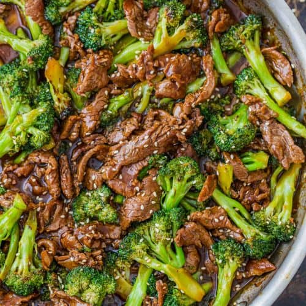

Beef and Broccoli

One of my favorite, easy-to-make dishes of all time. Whip up this classic American Chinese recipe in your very own home!
Ingredients
- Beef
- Broccoli
- Ginger
- Garlic
- Better than Bouillon
- Soy Sauce
- Oyster Sauce
- Mirin
- Corn Starch
Steps
In Bowl 1
- 2 tsp Soy Sauce
- 1 tsp Mirin
- 1 tsp Cornstarch
- Mix well until the corn starch is dissolved ino the solution.
- Take beef out and dry well with paper towels.
- Add beef to the solution and toss to mix.
- Let it sit for 10 minutes.
In Bowl 2
- 1/8 tsp Better than Bouillon
- 1/4 cup Boiling Water
- 2 Tbsp Oyster Sauce
- 1 tsp Mirin
- 2 tsp cornstarch
- Stir ingredients until cornstarch is combined.
On the Sauce Pan
- In a medium sized sauce pan, add 2 Tbsp of Avocado Oil on medium heat.
- Grate a 1 inch piece of ginger into the oil.
- Add 2-3 cloves of minced garlic. Stir for 10 seconds.
- Add beef. Cook for 1-2 minutes. Flip.
- Add sauce from Bowl 2 and bring to a simmer.
- Add broccoli and mix well for a minute.
Enjoy!
Return to Main Page